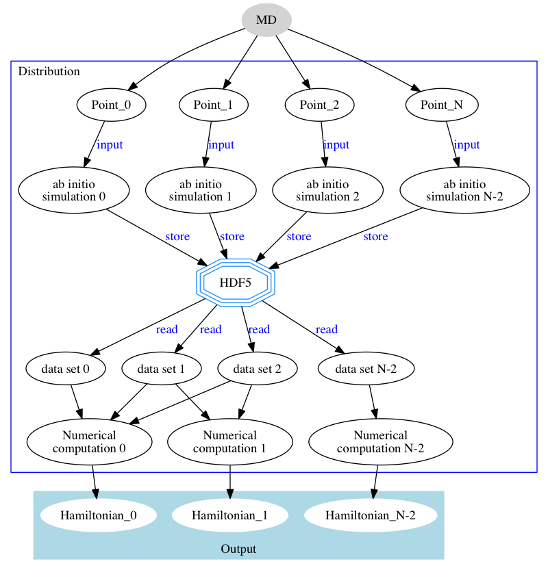

Installation
In order to install the nonadiabaticCoupling library you need to install first the QMWorks package and its environment using Anaconda as detailed here.
Then, to install the nonadiabaticCoupling library type the following
command inside the conda environment:
(qmworks) user@server> pip install https://github.com/felipeZ/nonAdiabaticCoupling/tarball/master#egg=qmworks --upgrade
Note: QMWorks is installed using conda, we suggest you to use the same virtual environment to run the coupling calculations.
Nonadiabatic coupling matrix
The current implementation of the nonadiabatic coupling is based on: Plasser, F.; Granucci, G.; Pittner, j.; Barbatti, M.; Persico, M.; Lischka. Surface hopping dynamics using a locally diabatic formalism: Charge transfer in the ethylene dimer cation and excited state dynamics in the 2-pyridone dimer. J. Chem. Phys. 2012, 137, 22A514.
The total time-dependent wave function can be expressed in
terms of a linear combination of N adiabatic electronic eigenstates
,
The time-dependent coefficients are propagated according to
where is the energy of the jth adiabatic state and $\sigma_{ji}(t)$ the nonadiabatic matrix, which elements are given by the expression
that can be approximate using three consecutive molecular geometries
where $\mathbf{S}_{ji}(t)$ is the overlap matrix between two consecutive time steps
and the overlap matrix is calculated in terms of atomic orbitals
Where $C_{\mu i}$ are the Molecular orbital coefficients and $\mathbf{S}_{\mu \nu}$ The atomic orbitals overlaps.
Nonadiabatic coupling algorithm implementation
The figure belows shows schematically the workflow for calculating the Nonadiabatic coupling matrices from a molecular dynamic trajectory. The uppermost node represent a molecular dynamics trajectory that is subsequently divided in its components andfor each geometry the molecular orbitals are computed. These molecular orbitals are stored in a HDF5 binary file and subsequently calculations retrieve sets of three molecular orbitals that are use to calculate the nonadiabatic coupling matrix using equations 4 to 7. These coupling matrices are them feed to the PYXAID package to carry out nonadiabatic molecular dynamics.
 Workflow for the calculation of the Nonadiabatic coupling using CP2K
The Overlap between primitives are calculated using the Obara-Saika recursive scheme, that has been implemented as a cython module for efficiency reasons. The nonadiabatic coupling module uses the aforementioned module together with the multiprocess Python library to distribute the overlap matrix computations among the CPUs available. Also, all the heavy numerical processing is carried out by the highly optimized functions in numpy.
The nonadiabaticCoupling package relies on QMWorks to run the Quantum mechanical simulations using the CP2K package. Also, the noodles is used to schedule expensive numerical computations that are required to calculate the nonadiabatic coupling matrix.
Running the workflow
There are 2 steps to compute the nondiabatic couplings for a given molecular dynamics: 1. Create the scripts to perform the simulation 2. Running the scripts
Below is shown the script responsible for the first step of the simulation, which is available at:
bash
https://github.com/felipeZ/nonAdiabaticCoupling/blob/master/scripts/distribution/distribute_jobs.py
This script takes as input a minimal slurm configuration that can be modified by the user. The slurm configuration contains the number of nodes and task, together with the walltime requested and the job name. In the table below the default Slurm values for these parameters is shown
| property | default |
|---|---|
| nodes | 2 |
| tasks | 24 |
| time | 48:00:00 |
| name | namd |
Also, the user should provided the following parameters for the simulation
* path where the CP2K calculation will be created (``scratch``)
* project_name
* path to the basis and Cp2k Potential
* CP2K parameters:
- Range of Molecular oribtals printed by CP2K
- Cell parameter
* Settings to Run Cp2k simulations
* Path to the trajectory in XYZ format
This is the script corresponding to the step 1:
from collections import namedtuple
SLURM = namedtuple("SLURM", ("nodes", "tasks", "time", "name"))
def main():
"""
THE USER MUST CHANGES THESE VARIABLES ACCORDING TO HER/HIS NEEDS:
* project_name
* path to the basis and Cp2k Potential
* CP2K:
- Range of Molecular oribtals printed by CP2K
- Cell parameter
* Settings to Run Cp2k simulations
* Path to the trajectory in XYZ
The slurm configuration is optional but the user can edit it:
property default
* nodes 2
* tasks 24
* time 48:00:00
* name namd
"""
# USER DEFINED CONFIGURATION
# Varaible to define the Path ehere the Cp2K jobs will be computed
scratch = "<Path/where/the/Molecular Orbitals/and/Couplings/are/computed>"
project_name = 'replace_with_Name_of_the_Project' # name use to create folders
# Path to the basis set used by Cp2k
basisCP2K = "<Path/to/the/BASIS_MOLOPT>"
potCP2K = "<Path/to/the/GTH_POTENTIALS>"
# Cell parameter can be a:
# * number.
# * list contaning 3 Number.
# * list of list containing the matrix describing the cell.
cell_parameters = None
# Angles of the cell
cell_angles = [90.0, 90.0, 90.0]
# Range of Molecular orbitals use to print.
# They will be used to compute the derivative coupling. If you want
# to compute the coupling with 40 Orbitals: 20 occupied and 20 virtual,
# you should choose the following index in such a way that you
# print 20 HOMOs and 20 LUMOs.
range_orbitals = Lower_Index, Highest_Index
# The number of LUMOs to print must be equal to the added_mos variable
# in CP2K. We are printing 20 by default.
cp2k_main, cp2k_guess = cp2k_input(range_orbitals, cell_parameters,
cell_angles)
# Trajectory splitting
path_to_trajectory = "<Path/to/the/trajectory/in/xyz/format"
blocks = 5 # Number of chunks to split the trajectory
# SLURM Configuration
slurm = SLURM(
nodes=2,
tasks=24,
time="48:00:00",
name="namd"
)
# Path where the data will be copy back
cwd = os.path.expanduser('.')
distribute_computations(scratch, project_name, basisCP2K, potCP2K,
cp2k_main, cp2k_guess, path_to_trajectory, blocks,
slurm, cwd)
def cp2k_input(range_orbitals, cell_parameters, cell_angles,
added_mos=20):
"""
# create ``Settings`` for the Cp2K Jobs.
"""
# Main Cp2k Jobs
cp2k_args = Settings()
cp2k_args.basis = "DZVP-MOLOPT-SR-GTH"
cp2k_args.potential = "GTH-PBE"
cp2k_args.cell_parameters = cell_parameters
main_dft = cp2k_args.specific.cp2k.force_eval.dft
main_dft.scf.added_mos = added_mos
main_dft.scf.max_scf = 200
main_dft.scf.eps_scf = 1e-4
main_dft['print']['mo']['mo_index_range'] = "{} {}".format(*range_orbitals)
cp2k_args.specific.cp2k.force_eval.subsys.cell.periodic = 'None'
# Setting to calculate the wave function used as guess
cp2k_OT = Settings()
cp2k_OT.basis = "DZVP-MOLOPT-SR-GTH"
cp2k_OT.potential = "GTH-PBE"
cp2k_OT.cell_parameters = cell_parameters
ot_dft = cp2k_OT.specific.cp2k.force_eval.dft
ot_dft.scf.scf_guess = 'atomic'
ot_dft.scf.ot.minimizer = 'DIIS'
ot_dft.scf.ot.n_diis = 7
ot_dft.scf.ot.preconditioner = 'FULL_SINGLE_INVERSE'
ot_dft.scf.added_mos = 0
ot_dft.scf.eps_scf = 1e-04
ot_dft.scf.scf_guess = 'restart'
cp2k_OT.specific.cp2k.force_eval.subsys.cell.periodic = 'None'
return cp2k_args, cp2k_OT
# End of the user serviceable code
Notice that in the previous definition of the cp2k_input function there are
two sets of Settings called: cp2k_args and cp2k_OT. The cp2k_OT is used
to create an initial wave function guess using the
orbital transformation
method. Then once an initial guess is obtained a single point calculation is performed.
Subsequent single point calculation to compute the molecular orbitals use the previous
computations as initial guess, in such a way that the OT method is only performed
in first geometry of the trajectory.
Using the aforemention Settings QMWorks
automatically create the CP2K input. You do not need to add the & or &END symbols,
QWorks adds them automatically for you.
CP2K requires the explicit declaration of the basis set together with the name of the potential used for each one of the atoms. In the previous example the basis for the carbon is DZVP-MOLOPT-SR-GTH, while the potential is GTH-PBE.
There are several way to declare the parameters of the unit cell, you can passed to
the cell_parameters variable either a number, a list or a list or list. A single
number represent a cubic box, while a list represent a parallelepiped and finally a
list of list contains the ABC vectors describing the unit cell.
Alternatively, you can pass the angles of the cell using the cell_angles variable.
Coupling calculation
In order to compute the derivative coupling, the molecular orbitals coefficients for
the relevant orbitals should be available. These molecular orbitals are computed
using the previous script. The workflow assumes that you are printing 2N number
of orbitals from *CP2K: N HOMOs and N LUMOs. this is done using the added_mos
parameters in CP2K that determines the number of LUMOs to compute and using
the mo_index_range keyword in Cp2k, which print molecular orbital in
the range provided by the user.
Workflow distribution
Once you fill in the required parameters you just need to run the script like:
user@server> python distribute_jobs.py
You will see that several folders were create: chunk_a, chunk_b, etc., where the number of files correspond with the number of block that you request in the script. The content of each folder is something similar to:
[user@server]$ ls chunk_a
chunk_xyz_a launch.sh script_remote_function.py
Each folder containts a chunk_x file containing molecular geometries in xyz format, a slurm launch.sh script file and a python script script_remote_function.py to compute the couplings.
You only need to run the slurm script in order to compute the jobs.
Merging the chunks
The previous script generates a set of folder where the molecular dynamic trajectory has been split in several chunks containing approximately the same number of geometries. In each of this folders a HDF5 file is creating containing the Molecular orbital and the coupling.
Once all the batches have finishes all the HDF5 files should be merged into one
and the whole couplings for the entire trajectory can be printed. For doing so,
a script is provide and can be found at:
The structure of the script is shown in the following figure:
Restarting a Job
Both the molecular orbitals and the derivative couplings for a given molecular dynamic trajectory are stored in a HDF5 file. The library check wether the MO orbitals or the coupling under consideration are already present in the HDF5 file, otherwise compute it. Therefore if the workflow computation fails due to a recoverable issue like:
- Cancelation due to time limit.
- Manual suspension or cancelation for another reasons.
Then, in order to restart the job you need to perform the following actions:
- Remove the plams folder where the
CP2Kcomputation were carried out. - Do Not remove the file called
cache.jsonfrom the current work directory.
The plams folder is create inside the scratch folder that you have defined in the script to distribute the computation. In the previous example it was:
scratch = 'scratch-shared/user29/jobs_quantumdot'
Known Issues
Coupling distribution in multiple nodes
CP2K can uses multiple nodes to perform the computation of the molecular orbitals using the MPI protocol. Unfortunately, we have not implemented MPI for the computation of the derivative coupling matrix. The practical consequences of the aforemention issues, is that the
calculation of the coupling matrices are carried out in only 1 computational node. It means that if you want ask
for more than 1 node to compute the molecular orbitals with CP2K, once the workflow starts to compute the derivative couplings only 1 node will be used at a time and the rest will remain idle wating computational resources.
Memory allocation
The derivative couplings computations are started once all the molecular orbitals have been calculated. Then, all the coupling calculation are scheduled, holding in memory all the molecular orbitals until they are requested. It cause a huge memory consumption.
Reporting a bug or requesting a feature
To report an issue or request a new feature you can use the issues tracker of github
The Coupling Workflow
The following function is called by the script_remote_function.py to compute the molecular orbitals and the correspoding derivative couplings.
def generate_pyxaid_hamiltonians(package_name, project_name,
cp2k_args, guess_args=None,
path=None,
geometries=None, dictCGFs=None,
calc_new_wf_guess_on_points=None,
path_hdf5=None, enumerate_from=0,
package_config=None, nCouplings=None,
traj_folders=None, work_dir=None,
basisname=None, hdf5_trans_mtx=None,
dt=1):
# prepare Cp2k Jobs
# Point calculations Using CP2K
mo_paths_hdf5 = calculate_mos(package_name, geometries, project_name,
path_hdf5, traj_folders, cp2k_args,
guess_args, calc_new_wf_guess_on_points,
enumerate_from,
package_config=package_config)
# Calculate Non-Adiabatic Coupling
# Number of Coupling points calculated with the MD trajectory
nPoints = len(geometries) - 2
promise_couplings = [calculate_coupling(i, path_hdf5, dictCGFs,
geometries,
mo_paths_hdf5, hdf5_trans_mtx,
enumerate_from,
output_folder=project_name, dt=dt,
nCouplings=nCouplings,
units='angstrom')
for i in range(nPoints)]
path_couplings = gather(*promise_couplings)
# Write the results in PYXAID format
path_hamiltonians = join(work_dir, 'hamiltonians')
if not os.path.exists(path_hamiltonians):
os.makedirs(path_hamiltonians)
# Inplace scheduling of write_hamiltonians function.
# Equivalent to add @schedule on top of the function
schedule_write_ham = schedule(write_hamiltonians)
promise_files = schedule_write_ham(path_hdf5, work_dir, mo_paths_hdf5,
path_couplings, nPoints,
path_dir_results=path_hamiltonians,
enumerate_from=enumerate_from,
nCouplings=nCouplings)
hams_files = run(promise_files, path=path)
print(hams_files)